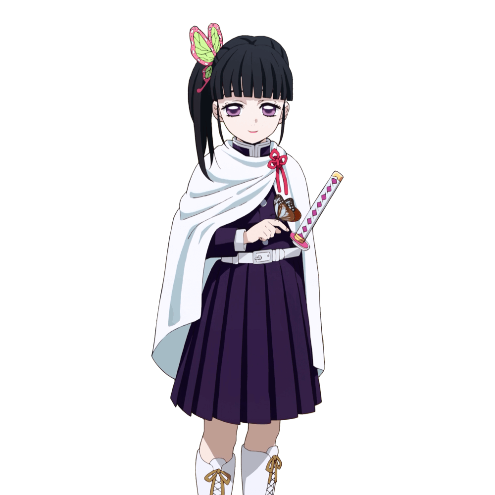

栗花落香奈乎（つゆり カナヲ Tsuyuri Kanao）
- 配音 : 上田麗奈（日本）；連婉鈞（台灣）；閻麼麼（中國大陸）；何凱怡（Viu）、（TVB）（香港）；Brianna（美國）
-
與炭治郎同期的鬼殺隊劍士，胡蝶香奈惠和胡蝶忍的繼子，同時也是「蝶屋敷」的身體機能恢復訓練員。留著掛有蝴蝶髮飾的半邊斜馬尾，總是笑容滿面卻沉默不愛說話的少女劍士。頭上的粉色蝴蝶髮飾為香奈惠的遺物。
花之呼吸使用者，敏銳的「視覺」造就其優秀的觀察力，可以僅憑微小的舉動準確預測對方下一步的動作。肺活量極大，可以將訓練常用的巨大葫蘆吹爆。日輪刀為櫻紅色刀身、白色刀柄、紅色目釘，刀鍔刻有紅色丸型櫻花煙圖案。
幼時家中貧窮，遭到父母極為殘忍地虐待，因為害怕和家中的哥哥們一樣第二天成為冰冷的屍體而不敢哭泣，也練出了優秀的視覺能力，讓自己免於被父母打中要害。在被父母賣掉後由胡蝶姐妹從人販手中帶走，但兩人很快就發現她不但有溝通方面的障礙，思考也十分機械式，於是被香奈惠教導用擲硬幣的方式來幫助她做決定。在炭治郎等人即將離開蝶屋敷的時候以擲硬幣的方式決定是否讓香奈乎跟隨她自己的心聲，並擲出了代表「是」的正面，幫助香奈乎可以有自己的想法。
由於本名不詳，姐妹倆將這個孩子取名為「香奈乎」，並讓其自由選擇想要的姓氏，香奈乎並從多個候補中挑選了「栗花落」，從此以後她的全名便是「栗花落香奈乎」。因為自己沒辦法像蝶屋的女孩們那樣做家事和替病患治療，決定將斬鬼作為自己的志向，雖然胡蝶姐妹不想讓她從事這麼危險的工作，但隨著香奈惠和忍的繼子們接連死去，加上同情蝶屋的女孩們失去至親的遭遇，讓她無法原諒鬼的心情越來越強烈，於是暗中把從香奈惠那裡觀察到的花之呼吸劍術學起來，並瞞著忍去參加最終選拔，成為五位合格者之一。
被派往那田蜘蛛山以後援身分與隱部隊上山搜尋失蹤的隊員，奉命捉拿炭治郎和禰豆子，並將打算讓禰豆子逃走的炭治郎一腳踹到昏迷。炭治郎初次在蝶屋敷休養時，在與其他醫護人員的交流中，得知香奈乎透過吹葫蘆學會可以全天候持續全集中呼吸的「全集中・常中」。在炭治郎等人順利完成機能恢復訓練後，炭治郎前來道別並以擲硬幣為賭注，希望香奈乎能夠遵循自己的意志行動，而香奈乎先是對他這個突如其來的舉動感到訝異，隨後有了如釋重負的感覺，自此對炭治郎有了好感。因為炭治郎的影響開始有所改變，於宇髄前來蝶屋敷要帶走葵前往吉原遊廓進行調查時，首次不依靠擲硬幣的方式自主地想阻止宇髄。在吉原之戰結束後，主動照顧昏迷的炭治郎，炭治郎恢復意識時已能主動說話。
與柱及其他隊員一同受困無限城時，親眼目睹恩師胡蝶忍被上弦之貳·童磨殺害並吸收至體內，後和伊之助與童磨交戰，在童磨的身體因忍的藤花毒而開始腐爛時，與伊之助乘勝追擊，使用自創的花之呼吸 終之型
彼岸朱眼（彼岸朱眼／ひがんしゅがん）看穿童磨衰弱後所放出的血鬼術，砍下童磨的脖子，卻因為後遺症導致右眼失明。之後與伊之助共同行動，並與善逸、村田會合。在與無慘的決戰中利用愈史郎的血鬼術符咒隱身靠近，卻被無慘的攻擊掃中，符咒破裂，額頭割傷。正當無慘欲結束其性命時，被及時甦醒的炭治郎救下，並託付給隱看照。
在炭治郎變鬼看到眼前的慘狀回憶起和忍姐姐的對話，當初為了防止禰豆子的變人藥的量不夠，獨一製作了三份，最後一份原本要扔掉的，被香奈乎保留了，此時香奈乎還留了一隻眼睛，她知道此時她該做什麼，在被炭治郎的攻擊刺中的情況下，香奈乎將變人藥打入了炭治郎體內。而三個月過後和炭治郎在蝶屋相遇，透露自己左眼並不是完全看不見，而風柱實彌也把陣亡的蛇柱小芭內的蛇「鏑丸」交給她。在炭治郎、禰豆子、善逸、伊之助返鄉定居期間，香奈乎成為醫生和葵定居在忍生前的住處為炭治郎等人看診，定期向愈史郎請教醫療方面的問題和教導禰豆子料理。漫畫最終話和單行本最終卷附錄說明炭治郎和栗花落香奈乎結為夫妻，兩者育有後代竈門彼方、竈門炭彥。
在鬼滅學園就讀高中二年堇班，隸屬於花道部，胡蝶家的養女，是學園三大美女之一。
在第一回人氣投票結果中，以712票獲得第8名。在第二回人氣投票結果中，以5305票獲得第10名。